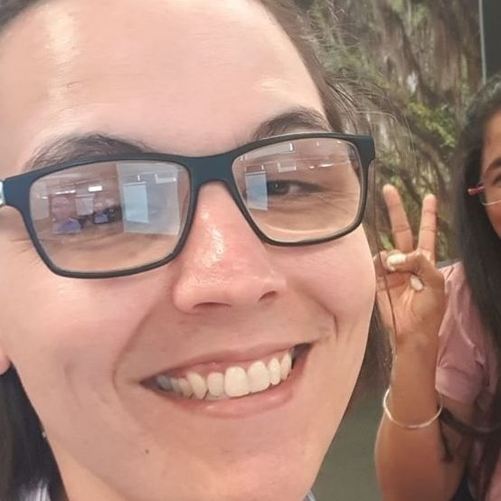

Meet The Team
 |
|
About Me
Hi, I'm Samuel Ashton (s3742249)
Team: Creative Protocol
I am a Brisbane based IT professional, working in the industry for the last 17 years. Having been interested in IT from an early age I have interacted with technology from the late 80's Starting with an MSX2 microcomputer, watching computing evolve through generations of advancement to today's world of cloud computing and online mobile devices in everyone's pockets. Throughout my career I have performed roles in IT support, System Administration, Network Engineering and IT Management. When not in front of a computer, I enjoy fishing with my two children, Japanese sports cars and collecting Phantom comics, even if I don’t get time to read them all!
Career Plans
Samuel Ashton - Chief Technical Officer
A Chief Technical Officer’s primary responsibility is to understand and implement technologies that help a business achieve its goals and objectives. Depending on the size of the organization. Typical Steps to Becoming a Chief Technical Officer are :
- Earn a Bachelor’s Degree. Nearly all Chief Technical Officers start their professional journeys by earning a bachelor’s degree in a computer science-related field. With the knowledge of database design, digital forensics, cyber law, programming, and data integrity, graduates can move on to work in a variety of IT professions.
- Aspiring Chief Technical Officers must build a strong educational base and gain experience in entry-level positions before taking the next step toward becoming a Chief Technical Officer. This type of experience can be gained by doing an internship and getting hands on experience in a number of IT areas.
- On-the-Job Experience is vital in this position as new problems lead to new IT specialties and roles, the Chief Technical Officer’s job becomes more complex. Organizations depend on their CTOs to have the experience to understand these complexities and to ensure that the right people are in place to address any concerns. CTOs gain this experience and understanding by working in a number of IT areas, such as Network architecture, Big data engineering, Information security management, Security engineering and Web software development.
- Positions in the above areas may require only a few years of experience, but professionals need to have between five and 10 years of experience, total, before applying to a manager or director role. Once in a managerial position, an IT manager who wants to work as a CTO must spend an additional five to seven years honing his or her leadership and business skills. So typically a professional must work in the IT field for at least 15 years before seeking employment as a CTO.
- After spending some time working in the technology field, IT professionals with the ultimate goal of becoming a CTO should consider pursuing a master’s degree. A CTO needs to have the technological expertise and a keen business sense to be successful in a leadership role.
 |
|
About Me
Hi, I'm Shane Bunting (s3407441)
Team: Creative Protocol
I am a 27 year old, Melbourne born Libra with my general interests being fitness, cars (Subaru all the way), computers, gaming, animation and security. Straight out of year 12 I went on to complete my certificate 4 in fitness and begin the journey into personal training. It was a weird time for PTs back then and from there I continued to upskill where possible and work on the side where ever I could. I obtained my pre app in electrical, but was unable to land a job due to being of mature age, basically it cost more to hire me. I also attended university for Game Art and Animation, but financially living expenses where too much at the time, so I had to leave and gain full time employment. Moving forwards, this instead led me to many physical related jobs. This brings us to where I am now, I am on the hunt to pursue my hobbies and turn them into a career in something I am able to commit to long term, as my body has begun to give me signs that it's time to take it back a notch. When I was in year 10, about 15 years old, my parents took my brother and I out of school for a year and we travelled around Australia (Tasmania inc) and also the South island of New Zealand. It was a life changing experience that looking back on wasn’t as bad as 15 year old me made it out to be.
Career Plans
Shane Bunting - Senior Incident Responder
Incident responders seek to protect and improve organizational security by preventing, averting, and mitigating security threats. Prevention duties include system monitoring, assessment, testing, and analysis designed to identify and correct potential security breaches. Incident responders often create security plans, policies, protocols, and training that prepare organizations to respond efficiently and effectively to incidents. Steps to become an incident responder :
- Bachelor's or master's degrees in computer forensics, cybersecurity, or a related field often provide ideal educational preparation for incident responders careers. For those seeking a career transition, earning your master's degree in information security or incident response management can position you well for eventually getting upper-level roles such as senior incident responder, senior intrusion analyst, or CSIRT manager.
- Many professionals in this skills-based field gain their cybersecurity education simply by earning relevant professional certifications such as certified incident handler, certified intrusion analyst, or certified forensic analyst. Regardless of the degree requirements, most incident responder jobs require some certifications. Keep in mind that certification requirements vary depending on position, employer, and industry.
- Someone who wants to become a Senior Incident Responder can benefit from doing an internship, giving them some practical experience in their chosen field and also allowing them to network within the forensic and cybersecurity fields.
- Most incident responder jobs require at least 2-3 years of prior relevant work experience in fields like computer forensics, cybersecurity, or network administration.
- Incident responders need considerable applied knowledge and skills working with many kinds of systems. Comprehensive understanding of operating systems, hardware and software systems, and network systems are essential. Related hard skills include system monitoring tools, forensics software, and e-discovery tools. Incident responders also must understand programming languages to do the work often needed to address cybersecurity threats.
- Cybersecurity degree programs cultivate skills through coursework in operating systems and information systems security, cybercrime forensics, and object-oriented programming. Aspiring incident responders interested in leadership positions benefit from courses on cybersecurity operations management, cybersecurity law and policy, and global trends. Other relevant courses include cyberwarfare and ethical hacking.
|  |
|
About Me
Hi, I'm Jessica Delgado (s3864357)
Team: Creative Protocol
I am a 28 year old transgender woman living in Sydney and I currently do IT support for eHealth NSW. I am an amateur musician and have learned how to learn play a new instrument every year since age 16. From the age of 18 I completed a Cert IV in Network Administration, Programming and a Diploma of Information Technology. From there I was able to secure employment in a helpdesk role, supporting the largest library of applications used by a single organisation in the southern hemisphere. I have been able to perform various roles within the same organization, moving to application support for the eMR (electronic medical records) systems used in hospitals. I now work as a senior support technician for eHealth.
Career Plans
Jessica Delgado - IT Program Manager
IT project managers oversee and direct the activities of information technology projects, including managing personnel, overseeing budgets and schedules, and executing a project communication plan. Career Steps to Follow to become an IT project manager :
- IT project managers must possess at least a bachelor's degree in computer science, information technology or IT project management. The courses in this program covers topics like Database management systems, IT security, Management information systems, Project procurement management and Principles of project management.
- Complete an internship. An internship allows students to interact with experienced IT project managers and complete some of the same tasks they will perform when working in the field. This experience and these networking opportunities may make it easier to find a position in IT project management immediately after graduation.
- Most computer and information systems managers have several years of work experience in the field of information technology. Employers often seek candidates who not only possess a bachelor's degree, but who also have experience working in project management or supervising individuals in an information technology department.
- After 3-5 years of experience working in an area related to IT project management, many individuals may be able to advance in their careers. IT project managers oversee IT projects by planning the project and managing staff.
- To improve employment prospects, consider earning a master's degree.
- With enough management experience, IT project managers can advance and become chief technology officers or even chief executives.
 |
|
About Me
Hi, I'm William Ericson (s3866209)
Team: Creative Protocol
For my hobbies, while I enjoy listening to music, I also used to make my own, I studied Music Performance and Technical Production, Yes, I have performed live, no, I will not show you the videos. Over the years, I have hoarded a fair bit of music, while the bulk of my collection is digital (it takes up less space), I also have a sizeable collection of CDs and cassette tapes (and a few records here and there). I've been interested in IT from a young age, it all started when one of my cousins showed me how to use Cheat Engine, while I had fun adding extra stuff to the games I played, I also enjoyed putting in random codes and seeing what it would do. Before joining RMIT, I studied Computing at Deakin College and then Computer Science at Deakin University, but it reached the point where rent was too expensive, so I had to leave.
Career Plans
William Ericson - Robotics Engineer
Robotics engineers design and build machines to do automated jobs in industries like manufacturing, aerospace and medicine. In order to pursue a career in Robotic Engineering the following steps should be followed :
- Obtaining a Bachelor's degree in IT which offers concentration in robotics as well as Electronics engineering programs that teach you the fundamentals of electronics components and common electronic circuits. Mechanical engineering programs can also be a good qualification as they teach you to apply concepts from physics, mathematics and materials science to create machinery used in transportation, manufacturing, communication and other uses. These programs may also cover electronic, hydraulic and pneumatic systems.
- Try to find an internships offered at engineering and robotics companies. An internship can provide you with work experience and help you network within the industry. Your internship might entail no more than observing work or you may be actively involved in a project.
- Find a Job as a Robotics Engineer, a good place to start is in the government and technical services sectors. This will allow you to gain work experience and advancement within the robotics engineering field.
- You can advance your career and earn a higher salary with a master's degree in robotics engineering.
 |
|
About Me
Hi, I'm Matt McCracken (s3864453)
Team: Creative Protocol
I am a 35-year-old father of 2, who works full time for a hotel chain where I see to all their IT needs. I was born in Bundaberg, Queensland and, as a young boy, moved to Central West Queensland where I grew up. I currently live in Johannesburg, South Africa. I completed my school career at Barcaldine State School at the end of Grade 11, when I left to pursue a career in IT, as a trainee position opened up at the Department of Main Roads, this is also where I studied my Cert 2 in IT through Tafe. My personal interests are gaming, travel, golf, cricket, and rugby league. I have always had a keen interest in all things tech and like to keep up with what is happening in the world of Technology, both regarding hardware and software. I have always enjoyed understanding how things work, whether it was taking apart an old computer or looking at the source code of how a website was built. My experience in IT include 7 years at The Department of Main Roads following my initial traineeship in their IT department and 6 years as an IT Administrator for a Hotel chain.
Career Plans
Matthew McCracken - OT Network Security Administrator
A Network Security Administrator identifies what type of computer network an organization needs. They install network hardware and software programs, monitor networks, collect data to analyse a network's operation, and train individuals on how to use the network. A good career plan to become a Network Security Administrator is :
- Obtain a Bachelor’s Degree, this is the traditional minimum degree preferred by prospective employers. A Bachelor’s Degree exposes students to a broader curriculum that provides a foundation in mathematics and computer science. Students also develop a comprehensive understanding of programming, software architecture, and software testing. In addition to a Batchelor’s Degree, they can also take specialized courses in application areas, such as Network security, Information technology diagnostics, Network design and Network communications
- To improve the chances of getting employment, an internship can be helpful. An internship can allow hands-on experience working with computer networks and also give you the opportunity to network with other professionals in the field. This experience and the networking opportunities may make it easier to find employment after graduation.
- Obtain a job and work in the system administrator position to gain the necessary employment in order to work your way up to Network Security Administrator. Security Administrators may backup data contained on an organization's computer network, implement network security measures, monitor network performance, and discuss how to resolve network problems with workers who use the network.
- Earning professional certification demonstrates an individual's proficiency in managing specific computer network systems. Many companies prefer certifications, so this will open the door to more job opportunities. Industry companies, such as Cisco and CompTIA, offer certifications to network managers. These certifications, which include the Cisco Certified Network Professional and CompTIA Network+ certification, usually require passing an exam.
- It is also important to maintain technical skills. The hardware and software programs and computer systems used in network technology and management are constantly changing. Network Security Administrators can remain competitive by staying abreast of the latest technology.
 |
|
About Me
Hi, I'm Cameron McLaughlan (s3717363)
Team: Creative Protocol
Career Plans
Compare and contrast the career plans, including ideal jobs, for each person in the group. What common elements are there, if any? What differentiates each position from the others, if anything? How similar or different are your career plans across the group?
For each of the ideal jobs chosen by the group, a good foundation is a Bachelor’s Degree in Information Technology as well as obtaining entry level experience in their chosen fields. Although all the ideal jobs start with a Bachelor’s Degree, each one would branch out into their own specific field and specialize in the skills they require for their ideal job. It is also often recommended that an internship be done in the chosen field, this allows for some hands on training as well as being a good opportunity to network which could lead to job offers and also give you good contacts in the IT industry. Another similarity, throughout the IT industry is that anyone in this industry are often expected to keep on top of the latest digital trends, and they should also know how said trends will impact their particular field.
How did your group work together in Assignment 2? Will you be introducing any changes in process for Assignment 3?
Based on the group reflection from Assignment 2, although there was a bit of a rocky start, as the group was spread across different tools, once a single collaboration platform was agreed upon things became a lot more smooth. It was found communication was best over Microsoft Teams while collaborating our work using Microsoft OneNote and Office365 worked well for the team and allowed us to work well to complete what needed to be done on the assignment.
Everybody’s roles in the team was agreed on early, so each member was able to focus on their tasks and keep the team updated on their progress. Regular meetings were also held and minutes were made in the meetings which could be referred back to in subsequent meetings, which allowed group members to stay focused and updated. The minutes also allowed members who may have missed the meeting to stay informed.
In the beginning phases of the assignment, there was some lack in communication, this was due to various reasons, including location and work commitments. Once communication methods were improved the team worked well together to meet the deadlines.
We learned that in an online environment, where members have different commitments and schedules, it is of upmost importance that they communicate effectively. It is also vital that each member knows their role and what is expected from them so that deadlines are met or exceeded.
We thus feel that we have found a formula which works well for our team and we will continue to use this formula going forward in our assignments.